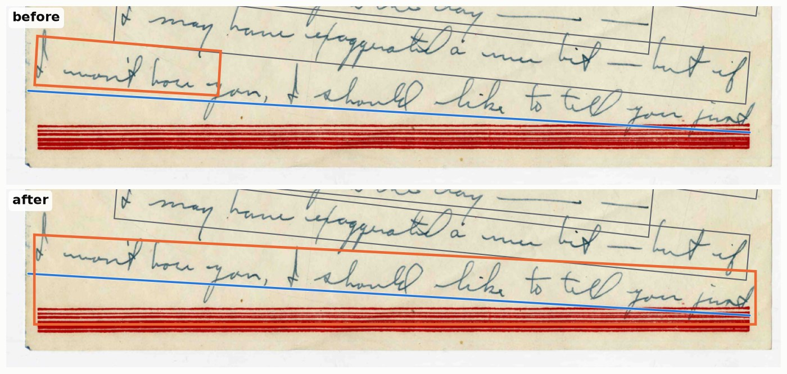
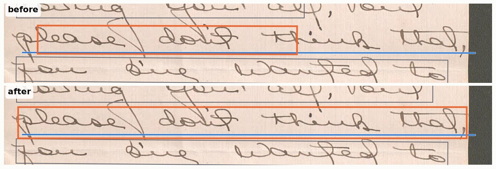
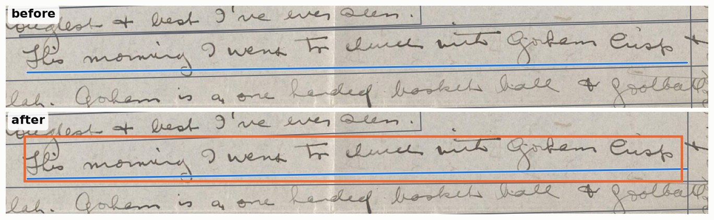
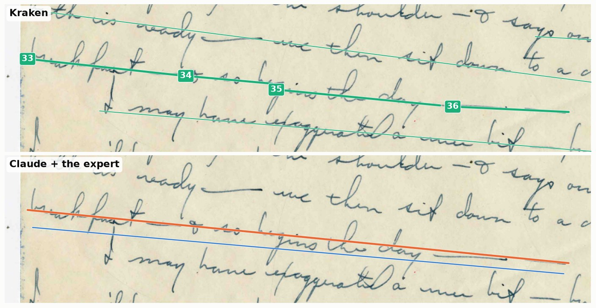
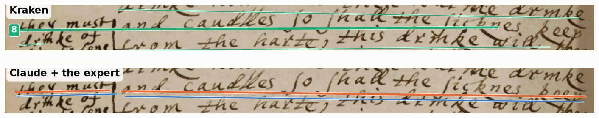
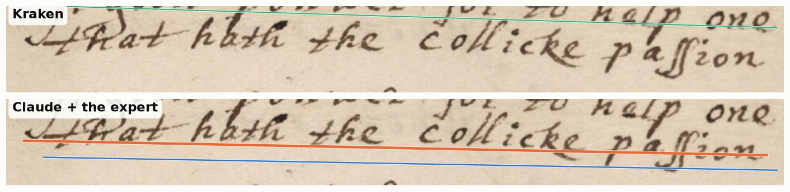
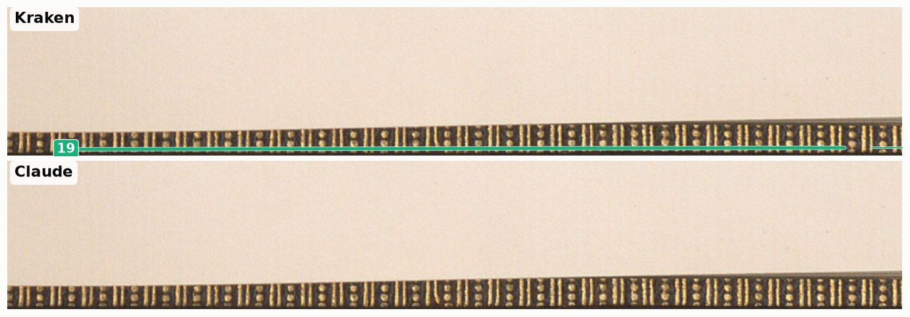
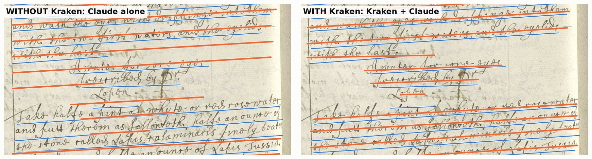

Can an AI do the volunteers’ job?34 slides · ↓ ↑ next / previous · P present · N notes
The question: can Claude, straight out of the box, do what Zooniverse volunteers do?
1 / 34
A test on the Zooniverse project Bounding Box Bonanza
Can an AI do the volunteers’ job?
Claude, straight out of the box (no training, no examples), is given 903 manuscript pages an expert had already transcribed. Its job: find every line of handwriting, read it, box it.
Notes The question in one line: can an AI do what Zooniverse volunteers (members of the public who help researchers) do, drawing a box around every line of handwriting, with no training at all? On the right is the end result for one page, the page we will follow through every step.
2 / 34
The job
Draw a box around every line of handwriting
That’s what Zooniverse volunteers do, by hand, page after page, so the writing can be read and searched.
Here, Claude gets the same pages, and an expert’s answer key tells us how well it does.
903
pages: letters, diaries and recipe books in six collections
Notes On the left: one real page as a volunteer boxed it, one box per line. That is the job. An expert had already transcribed all 903 pages line by line, which gives us an answer key to score against.
3 / 34
The expert
The answer key: every line of writing underlined, its words typed out. Used only to score.
Claude
The AI being tested: Claude Fable 5.2, set to think longer (“extra-high effort”). No answer key, no examples.
The volunteers
People on Zooniverse who boxed lines by hand, on 319 of the pages. Used only to compare.
The judge
A second AI (Claude Opus 5.5) that pairs Claude’s lines with the expert’s by reading their words.
A helper, Kraken: a free line finder that can’t read. Its lines guide Claude.
Notes The expert is the answer key: a line under every line of writing, with its words typed out, used only to score. Claude, the AI being tested, reads each page once, then checks its boxes; it never sees the answer key and gets no examples. The volunteers are members of the public on Zooniverse who boxed lines by hand, on 319 of the pages, used only to compare. The judge, a second AI, pairs Claude’s lines with the expert’s by reading their words, and says what is under every line left over. Kraken is a free program that finds lines of writing but can’t read; Claude uses its lines as a guide. Keep the colours in mind for the rest of the talk: in every picture of a page, blue is the expert, orange is Claude and teal is Kraken, the free line finder that helps in step 1. The one exception is the pictures Claude itself is given in steps 2 and 4, where Kraken’s lines and then the boxes are drawn in red; they are flagged there. The judge never changes Claude’s answers; it only re-pairs lines by their words and explains the rest.
How it works: one real page followed from scan to boxes in four steps (Kraken finds the lines, Claude reads the page, boxes from Kraken’s outlines, Claude checks the boxes: two Claude calls per page), each marked LLM, Python or the Kraken model, with what goes in and what comes out.
4 / 34
1
How it works
One real page, from scan to boxes, in four steps. Claude is asked twice: once to read the page, once to check the boxes.
Notes We now follow one page through the whole method. It is a soldier’s postcard from 1919: ordinary handwriting, a postmark, a printed line and an address written sideways, so it shows most of what the method has to deal with. The method has four steps, and two of them ask Claude something: one call to read the page, and one to check the boxes drawn around its lines.
5 / 34
The whole method, in order
Four steps, from scan to boxes
LLM = a Claude call · Python = plain code, no AI
Find the lines
page scan → a line under each line of writing, and its outline
Claude reads the page
call 1: page + Kraken’s lines → each line’s words, and where it sits
Boxes from the outlines
Kraken’s outlines → the smallest tilted boxes; overlaps meet halfway
Claude checks the boxes
call 2: page + the boxes → a new box where one is clearly wrong
Checking it (not the method):
Python
scores, box checks, the volunteers’ boxes
LLM
the judge
Notes The whole method on one slide, four steps, two of them Claude calls (LLM = Claude is asked something; Python = plain code, no AI; Kraken = a free line finder that can’t read). Step 1 is Kraken, a small free model that finds lines of writing but cannot read: for each line it gives a line along the bottom and an outline around the letters. Step 2 is Claude’s first call: it gets the page and a copy with Kraken’s lines drawn in red, and lists every line’s words and which red line it sits on; we will see the exact question and its raw answer. Step 3 is plain Python geometry: a box around Kraken’s outline of each line. Step 4 is Claude’s second call: it gets the page with those boxes drawn in red and numbered, with each line’s words, and gives a new box only where one is clearly wrong, mostly a box that cuts off the end of its line. The four pictures show the right-hand end of the same three lines: Kraken’s outline of the top line stops short of its last word, so the step 3 box does too, and step 4 puts it in. Each output feeds the next step. Below the line, the steps that check the result; they are not part of the method: Python scoring against the expert, the judge (an LLM, Claude Opus 5.5), Python box checks, and Python scoring of the volunteers’ boxes.
6 / 34
Our example page
A soldier’s postcard, 1919
Ordinary handwriting, an address written sideways, a postmark and a line of print: a little of everything.
27
lines of writing, by the expert’s count
Notes This is the raw scan the method starts from. The expert marked 27 lines on it, including the sideways address and printed words in the postmark. Claude never sees the expert’s lines.
7 / 34
Step 1 of 4
Kraken finds the lines
Kraken · a free line finder that can’t read
in: the page scan → out: lines and outlines
For every line of writing it sees, Kraken (in teal) draws a line along the bottom and an outline hugging the letters.
It isn’t perfect: some of its lines sit on no writing, some lines come in pieces, and on this card it missed the address written up the side. Step 2 sorts that out.
25
lines found by Kraken on this page
Notes Kraken is a free, open-source line finder, used here with its own standard model: nothing was trained on this project. It cannot read. For each line of writing it sees, it gives two things: a line along the bottom of the writing, and an outline hugging the letters (shaded). Its lines are a good guide but not the answer: on this postcard 3 of them sit on no writing, some lines of writing are broken into pieces, and it found nothing on the address written up the side. Claude sorts that out in step 2, and the outlines come back in step 3, for the boxes.
8 / 34
Step 2 of 4 · what Claude gets
Claude reads the whole page, once
LLM · Claude Fable 5.2, extra-high effort · call 1 of 2 per page
in: the page + a copy with Kraken’s lines in red, numbered
We ask (cut short)
“… Find every line of text on the page … For each line of text:
– Copy its words exactly as written …
– Give the numbers of the red lines that run along it …”
Notes This is the heart of the method: Claude’s first call per page, and the only one that reads the writing (the second, in step 4, checks the boxes). Claude gets two pictures, the plain scan and this copy with Kraken’s lines drawn in red and numbered (in this picture only, red is Kraken’s lines, exactly as Claude sees them), plus a prompt written once from the project’s own task: no examples, nothing from the answer key. Two bits of wording carried over from earlier rounds are disclosed at the end. In the prompt’s own words, cut short: “… On the second one, a computer program that finds lines but cannot read has drawn a red line where it thinks each line of text sits, numbered at its left end. … Find every line of text on the page … For each line of text: – Copy its words exactly as written … – Give the numbers of the red lines that run along it … – If no red line runs along it … also give a line drawn just below it, the way you would underline it …” The full prompt also lists each red line’s position, and how to copy crossed-out and unreadable words; it is in the prompts folder and in the notebook. Kraken’s lines are only a guide: Claude is told that some sit on no writing, some lines have none, and some come in pieces.
9 / 34
Step 2 of 4 · what Claude answers
Every line: its words, and where it sits
Claude’s raw reply (four of its lines)
{"red": [8], "text": "Colombey. les Belles"},
{"red": [14, 15], "text": "Was here Jan 22nd. Almost"},
{"red": [], "x1": 949, "y1": 1621, "x2": 1008, "y2": 101, "text": "Miss Belle Eisenberg"},
<no_text>[3, 5, 7]</no_text>
Python turns each into a line (orange)
18
on Kraken’s red lines (4 join pieces Kraken split up)
9
with Claude’s own two ends, where no red line fits
3
red lines with no writing: dropped
Notes Claude’s raw reply is a list with one entry per line of writing: the words, exactly as written, and the numbers of the red lines it sits on. Where no red line fits, as for the address written up the side, Claude gives the line’s two ends itself, in pixels. At the end it lists the red lines with no writing under them. Plain Python turns each answer into a line: a line on one red line takes that red line’s position; a line on several red lines (Kraken broke it up) runs from the first piece to the last; a line with its own ends keeps them. On this postcard, 18 lines sit on Kraken’s red lines (4 of them join pieces Kraken split up), 9 have Claude’s own two ends (the address written up the side, the postmark), and 3 red lines with no writing under them are dropped. In all: 27 lines, in one call of 175 seconds.
10 / 34
Step 3 of 4
Boxes from Kraken’s outlines
Python · NumPy geometry, no AI
in: each line + Kraken’s outline of it → out: one tilted box per line
① The smallest rectangle around Kraken’s outline, tilted with the line
② Stacked boxes can overlap (gold): tall letters reach into the next line
③ Both give way and meet halfway
A line Claude placed itself (9 here) gets a box of the page’s usual height.
Notes The boxes need no AI and no image processing of our own. For each line, take Kraken’s outline of it (all the pieces, if Kraken broke the line up), measure every point of the outline along the line and across it, and the box runs from the smallest to the largest of each: the smallest rectangle around the outline, tilted with the line. Where two boxes stacked one above the other overlap (the gold band), because tall and hanging letters reach into the next line, the upper box’s bottom and the lower box’s top both move to the middle of the overlap, so they just meet and each box keeps to its own line; on this card 11 boxes moved. Boxes side by side are left alone. A line Claude placed itself has no outline, so it gets a box along its line, as tall as the page’s usual box: 9 on this card, like the sideways address. Look at the upper box in these close-ups: Kraken’s outline stops short of the line’s last word, so the box does too. Such boxes are what step 4 is for: Claude checks every box next.
11 / 34
Step 4 of 4 · what Claude gets
Claude checks the boxes
LLM · Claude Fable 5.2, extra-high effort · call 2 of 2 per page
in: the page + a copy with step 3’s boxes in red, and Claude’s own words for each line
We ask (cut short)
“… Each box should hold exactly one line of writing …
Look at every box. Leave out the boxes that are right. …”
Notes Step 4 is Claude’s second call per page, with the same model and effort as step 2. It gets two pictures, the plain scan and this copy with step 3’s boxes drawn in red and numbered (in this picture only, red is the boxes, exactly as Claude sees them), and, in the prompt, each box’s position in pixels and its line’s words, as Claude itself read them in step 2: nothing from the answer key. The prompt also lists every box with its line’s words, for example: 17: {"x0": 172, "y0": 2542, "x1": 1679, "y1": 2657} "like the States here. Got". It is asked to leave the right boxes alone, and to give a new box only where one is clearly wrong. In the prompt’s own words, cut short: “… On the second one, a computer program that cannot read has drawn a red box around each line of text it found, numbered at its left end. … Each box should hold exactly one line of writing … Look at every box. Leave out the boxes that are right. For each box that is clearly wrong (it cuts off part of its line's writing, or takes in a good part of another line, or holds no writing at all), give a corrected box for its line …” The full prompt is in prompts/02_check_boxes.txt and the notebook. This step was first tried on the tuning pages and left out, then added; that is disclosed (D) on the poison-test slide and in DETAILS.md.
12 / 34
Step 4 of 4 · what Claude answers
A new box only where one is clearly wrong
Python · then
Claude’s box replaces the old one; overlaps meet halfway again
① Step 3’s box (thick) for “like the States here. Got”
② Claude’s raw reply for it
{"n": 17, "x0": 168, "y0": 2515, "x1": 1975, "y1": 2678}
③ After: the new box takes in what was cut off
On the 791 held-out pages
23%
of boxes got a new one (4,180 of 18,430)
Notes (The next slide shows three of the rescued lines.) Claude’s raw reply (234 seconds on this card) lists only the boxes it thinks are clearly wrong, each with a new upright box in pixels (or “none” for a box with no writing). Plain Python puts each new box in place of the old one (a box with no writing is dropped), then, as in step 3, stacked boxes that overlap meet halfway. Here, the box for like the States here. Got stopped before the line’s end, because Kraken’s outline did; Claude’s new box takes the whole line in. The thick box in the pictures is the one Claude corrects. On this card Claude gave 16 new boxes, the one shown among them, and left 11 as they were. On the 791 held-out pages it gave a new box for 4,180 of 18,430 boxes. Scored against the answer key afterwards (evaluation only): 1,102 of the expert’s lines that were not inside one box (partly outside, divided or in no box) are now inside one box, and 280 went the other way round: inside one box before, not now. Green = better, red = worse.
13 / 34
Why step 4 · 791 held-out pages
Claude’s check rescued 1,102 lines a box had missed

“I won't bore you, I should like to tell you just”
inside one box: 27% → 100%

“please don't think that,”
inside one box: 62% → 100%

“This mornig I went to lunch with Gordan Crisp”
inside one box: 0% → 100%
Orange: the box holding most of the expert’s line (blue). 280 lines went the other way.
Notes Before: the boxes of step 3 (rectangles around Kraken’s outlines, overlaps meeting halfway). After: the same boxes once Claude’s check (step 4) has replaced the clearly wrong ones. On the held-out pages the check gave a new box for 4,180 of 18,430 boxes; scored against the answer key afterwards (evaluation only), 1,102 of the expert’s lines that were not inside one box before are inside one box now, and 280 went the other way. The three examples are the notebook’s (Part 4), picked by eye for a clear picture among the rescued lines of ordinary handwriting.
14 / 34
The result
The finished page
The lines Claude found, their words, and a box around each: what the volunteers make by hand. Two Claude calls, no training, no examples.
25
of the expert’s 27 lines found on this page. How that is counted comes next.
Notes The finished page: the same thing a volunteer produces, made with no training and no examples, in two Claude calls: one to read the page, one to check the boxes. Of the expert’s 27 lines, Claude has 25. Next we look at how that is counted, and at the lines where Claude and the expert disagree.
How we score it: matching lines, found and match, the judge for disagreements, and checks of the boxes.
15 / 34
2
How we score it
Line by line, against the expert’s answer key: blue is the expert, orange is Claude.
Notes Now the scoring. On the right, the expert’s lines in blue and Claude’s in orange, on the same page. Thin pairs are lines both drew; thick ones are where they disagree.
16 / 34
Matching
An LLM pairs the lines that mark the same writing
LLM · Claude Opus 5.5 · checking it
in: the page, both sets of lines, their words → out: found, missed, extra
Found
Both drew a line on this writing. A pair.
Missed
The expert drew a line; no Claude line marks the same writing.
Extra
Claude drew a line; no expert line marks the same writing.
It reads the words, so lines drawn a little apart still pair.
Notes Scoring needs to know which of Claude’s lines is which of the expert’s. A second AI, Claude Opus 5.5, a different model from the reader, does the pairing: it sees the page with both sets of lines drawn and numbered, and both lists with their words, without being told whose is whose, and pairs the ones on the same line of writing. It reads the words: lines drawn a little apart still pair; lines that look alike but mark different writing don’t. Lines that mark the same writing are a pair; what is left over is a miss on the expert’s side or an extra on Claude’s side, and for each leftover it says what is under it. It was tested on the tuning pages first. It is used only for scoring.
17 / 34
Our page, scored
Found
25 of the expert’s 27 lines (93%)
Match
25 of Claude’s 27 lines (93%)
93
line score: the two in one number out of 100, high only when both are high
2 missed, by the judge’s reading: printed text (2). 2 extra: real handwriting the expert didn’t mark (2).
Are those really mistakes? (Thick line = no partner on the other side.)
Notes Two questions, two numbers. Found: of the expert’s lines, how many did Claude also draw? Here 25 of 27. Match: of Claude’s lines, how many are also the expert’s? Here 25 of 27. The line score combines them; it is only high when both are. The disagreements on this page are not all what they seem, which brings us to the judge.
18 / 34
Checking it · the judge
What the judge is asked, and what it answers
LLM · Claude Opus 5.5, high effort
in: the page, both sets of lines and their words → out: pairs + verdicts
Blue B…, orange O…: never told whose is whose.
The question (shortened):
“Pair each blue line with the orange line that marks the same line of writing … For every line left unpaired: is it writing the other set doesn’t mark, the same writing drawn differently, or nothing?”
Its raw answer, for one line (shortened):
{"O11": ["unmarked", "hand", "upside-down word NOTE left of Colombey line"]}
Python turns this into “real handwriting the expert didn’t mark”.
Notes The judge is an LLM step used only for checking: one call per page. It sees the page with both sets of lines drawn and numbered, blue B… and orange O…, with every line’s ends and words, and is never told which set is Claude’s; the picture shows part of what it gets. It pairs the lines that mark the same writing, reading the words, so lines drawn a little apart or split in two still pair; out come the pairs, and a verdict for every line left over. The question in fuller form, still shortened: “Pair each blue line with the orange line that marks the same line of writing: the same words in the same place. For every line left unpaired: is it writing the other set doesn’t mark, the same writing drawn differently, or nothing? Handwritten or printed? A reason in at most 12 words.” So for every line left over it says what is under it, handwritten or printed, and why. Python counts its pairs as matched and turns each verdict into the plain categories we report; the one shown becomes “real handwriting the expert didn’t mark”. The full prompt is in the prompts folder and the notebook.
19 / 34
The judge
Three disagreements, three verdicts
Extra line
Expert no line here
Claude “NOTE”
✓
Real handwriting the expert didn’t mark
“upside-down word NOTE left of Colombey line”
Missed line
Expert “died at Chereton”
Claude “~~of Beachborough~~ Buried Centre”
≈
Same writing, split or joined differently
“small crossed-out note above Buried Centre”
Missed line
Expert “Hazel”
Claude no line here
✕
Clear handwriting Claude missed
“signature Hazel; orange line drawn far below it”
Notes For every line where Claude and the expert disagree, a second AI, Claude Opus 5.5, a different model from the one that read the pages, explains what happened. It sees the whole page with both sets of lines numbered, blue B and orange O, and their words, and pairs the lines that mark the same writing. Three real verdicts: handwriting the expert never marked (Claude was right), the same writing drawn apart or split (nobody really wrong), and a line Claude truly missed. The judge only explains; it never changes Claude’s answers. Its reasons are quoted exactly; its B and O are its own numbering of the two sets.
20 / 34
What the judge found · 791 held-out pages
Most “mistakes” aren’t Claude missing writing
Claude’s 544 extra lines
43% real handwriting the expert didn’t mark
52% writing an expert line already covers
The expert’s 1,377 missed lines
46% writing a Claude line already covers
41% handwriting Claude truly missed
2% no writing under the expert’s line
green Claude right · red Claude wrong · amber split or joined differently · grey printed, counts for no one
Handwriting truly missed: 563 of the expert’s 19,263 lines, about 3 in 100.
Notes Across all 791 held-out pages, the ones kept aside for the results. The colours say who was right: green, Claude right; red, Claude wrong; amber, both have the writing, split or joined differently; grey, printed text, which counts for no one. An expert line with no writing under it leaves the answer key. Claude’s extra lines are mainly of two kinds: real handwriting the expert simply didn’t mark, and writing an expert line already covers, drawn as two lines instead of one or the other way round. On the other side, many “misses” are the same kind of thing. Handwriting Claude truly missed, by the judge’s reading: 563 of the expert’s 19,263 lines (46 clear plus 517 faint), about 3 in 100. Lines the judge gave no answer for: 0 extra and 0 missed.
21 / 34
Checking the boxes · 791 held-out pages
Does each box hold one line?
Python · checking it
in: Claude’s boxes + the expert’s lines → out: how the boxes hold the lines
expert line inside one box
88%
of the expert’s lines lie inside one box
89%
of boxes hold exactly one line
7%
of boxes reach into a neighbour
78%
overlap with the volunteers’ consensus box (100% = the very same box)
Notes The line score only looks at the lines. These checks look at the boxes themselves, against the expert’s lines (evaluation only). An expert line counts as inside one box when at least 80% of its writing lies in a single box (tested at points along the line that have writing near them); “divided” when a second box holds a fifth or more of it; “partly outside” when the box misses some of it. A box holds a line when at least half of that line is inside it, and it reaches into a neighbour when it also takes in a fifth or more of a second line. On the picture, this postcard: 24 of the expert’s 27 lines lie inside one box. The last number compares Claude’s boxes with the volunteers’ consensus box for the same line, on the pages they boxed: each box is paired with the one it overlaps most, and the overlap is the area they share divided by the area either covers, so 100% means the very same box. For reference, the volunteers’ own consensus boxes go through the same checks, on the same pages (the 268 held-out pages where they have any): 77% of lines inside one box, 96% of boxes with one line, 6% reaching into a neighbour.
How well it works: the headline, the volunteers, the collections, what Claude adds to Kraken, how the method was chosen and the leakage check.
22 / 34
3
How well it works
Measured on 791 held-out pages, kept aside for the results. Every idea was tried first on 82 other pages, the tuning pages; five exceptions (four in the method, one in the judge) are disclosed at the end.
Notes Now the results. To keep ourselves honest, ideas and settings were tried first on 82 tuning pages; the numbers that follow are on the other 791 pages. Four design choices that looked at more than the tuning pages are disclosed at the end and in the notebook’s last section, and so is one change to the judge, used only for checking: it became one call per page that pairs lines by their words after the owner saw, on a held-out page, printed lines with identical words left unpaired; it was tested on the tuning pages first.
23 / 34
The headline · 791 held-out pages
93 of every 100 lines found, and few extras
Found
93%
17,886 of the expert’s 19,263 lines
Match
97%
17,886 of Claude’s 18,430 lines
Line score
94.9
98.5 counting the AI’s verdicts on leftover lines (an upper estimate)
Words
94%
of the expert’s words, on the matched lines
58% of the pages are perfect: every line found, nothing extra.
Notes The headline. Claude finds 93 of every 100 lines the expert marked, and 97 of every 100 lines it draws are also in the answer key. Together that is a line score of 94.9; counting the AI’s verdicts on the leftover lines (an upper estimate, unchecked by a person), 98.5. On the matched lines it reads 94% of the expert’s words, with 3.7 letter errors per 100 (words and letters are counted on the matched lines only; missed and extra lines are already in the line score). Pages that come out perfect: 58%.
24 / 34
The volunteers · how they’re scored, part 1
Every volunteer box becomes a line
Python
in: a volunteer’s boxes → out: one line per box, scored by the same LLM as Claude’s, from positions and the page
① The boxes one volunteer drew
② Each box → its bottom edge, where you would underline the writing
③ Matched to the expert’s lines, by the same LLM as Claude’s, from positions and the page
So every volunteer gets the same three numbers as Claude: found, match and line score.
Notes To compare volunteers with Claude fairly, they must be scored the same way. The expert drew lines, the volunteers drew boxes, so each box becomes the line along its bottom edge, where an underline would go, tilted with the box. Those lines are then matched to the expert’s lines by the same LLM call as Claude’s lines, from their positions and the page only (volunteers’ boxes have no words, so Claude’s words are left out here too, to keep it fair). Every volunteer on every page ends up with a found, a match and a line score.
25 / 34
The volunteers · how they’re scored, part 2 · one page
Best and median, from 25 line scores
Python
in: every volunteer’s line score → out: the best and the median
Top row ● the 11 who boxed at least half the page · bottom ○ the 14 who stopped early · purple best · brown median
Best = 100
The top of all 25, picked with the answer key in hand: a ceiling, not a fair opponent.
Median = 100
The middle score of the 11 in the top row.
Notes Every dot is one volunteer’s line score on this page. 14 volunteers stopped early, drawing nothing or a single box, which is why they sit at the bottom. The best volunteer is simply the highest dot, and you could only pick it after scoring everyone against the answer key, so it is a ceiling. For the median volunteer we first leave out anyone who drew fewer boxes than half the expert’s 19 lines, here fewer than 9.5, then take the middle score of the 11 who remain: 100. Counting the early stoppers would make “median” look far worse than a volunteer who actually does the task.
26 / 34
The volunteers · how they’re scored, part 3
The consensus: a vote among the boxes
Python
in: all 206 boxes, 19 volunteers → out: one agreed box per line
① Pile up every volunteer’s boxes.
② Link and group: boxes from different volunteers that mostly overlap form a group (one colour each).
③ Vote, then merge: 14 of 26 groups have boxes from at least 10 of the 19 and stay; each becomes one median box.
Weak spot: the 8 who stopped early still vote; here 5 of the expert’s 19 lines fell short.
Notes The consensus combines everyone without the answer key: all 206 boxes from the 19 volunteers who drew any. Step one, pile up all the boxes. Step two, link any two boxes from different volunteers that mostly overlap, meaning their shared area is at least half of their combined area; boxes linked in a chain form a group, ideally one group per line of writing (one colour per group in the picture). Step three, the vote: a group survives if at least half of the volunteers who drew anything have a box in it, here 10 of 19 (14 of 26 groups stay), and becomes one box with the middle (median) centre, size and tilt; the consensus is one box per line most of them agree on. The weak spot: volunteers who stopped after one box still count as voters. Here the 8 who drew a few boxes and stopped count, so most lines need 10 of the 11 who kept going to agree, and 5 of the expert’s 19 lines fell short.
27 / 34
Claude vs the volunteers
On average, level with the best volunteer picked with hindsight
One page, 25 volunteers · line score
All 271 held-out pages they boxed
Claude
Best
Median
Consensus
Line score
95.8
95.6
92.9
83.8
expert lines inside one box
92%
91%
87%
76%
boxes holding one line
90%
92%
90%
96%
boxes reaching into a neighbour
5%
11%
12%
6%
deep overlaps per 100 boxes
3.5
15.2
16.7
4.8
Notes Best is the top scorer on each page, picked afterwards with the answer key; median is the one in the middle by line score, among those who boxed at least half the page; consensus is the boxes at least half of those who drew any agree on. Each volunteer box counts as the line along its bottom edge, and every set of lines, Claude’s included, is paired with the expert’s by the same AI from positions only. On this page, 25 volunteers boxed it. Claude scores 100, the best volunteer 100, the median volunteer 100 and the consensus 85 (it lost lines because many volunteers stopped after a box or two). Across all 271 held-out pages volunteers boxed: Claude 95.8, the best volunteer on each page 95.6 (a volunteer you could only pick with the answer key in hand), the median volunteer 92.9, the consensus 83.8. The rows below the line score put everyone’s boxes through the same box checks as before, on the same pages: how many of the expert’s lines lie inside one box, how many boxes hold exactly one line, how many reach into a neighbour’s writing, and how many pairs of boxes overlap deeply (by more than a quarter of the gap between lines), per 100 boxes. No verdicts counted: the same pairing for Claude and the volunteers alike.
28 / 34
By collection · line score on its held-out pages, best first
Some collections are harder than others
99
J. H. Stuart letters
13 pages
98
Brockman letters
292 pages
98
Clara Barton diaries
45 pages
97
Eisenberg letters
124 pages
92
Medical recipe books
303 pages
88
Misc. manuscripts
14 pages
Notes Each collection with a typical page from it (the page whose own line score is closest to the collection’s middle score), best collection first. Clean letters and diaries tend to come close to perfect. The medical recipe books (old hands, faded ink, ink showing through from the back, scraps of the facing page at the fold) and the mixed miscellaneous pages tend to be the hardest.
29 / 34
What Claude adds to Kraken · 791 held-out pages
Kraken alone 83.9 → with Claude 94.8

Joins Kraken’s pieces into one line: 2,391 lines

Splits a Kraken line that runs across two pieces of writing: 431

Adds the lines Kraken missed, and reads them: 1,156

Drops Kraken’s lines over no writing: 993
Top: Kraken (teal) · below: Claude (orange) and the expert (blue). Every word is Claude’s: Kraken can’t read.
Notes Kraken, the free line finder, can’t read, and on its own many of its lines are junk (stains, ruled lines, a page’s decorated edge) or pieces of one line. Both are scored the same way here: an LLM matches each set of lines to the expert’s from their positions and the page alone (Kraken’s lines have no words). Kraken alone gets 83.9. Claude’s one reading of the page (step 2) joins 2,391 lines Kraken broke into pieces, splits 431 that ran across two pieces of writing, adds 1,156 Kraken missed and drops 993 junk lines: 94.8, and every word is Claude’s reading. The four examples are the notebook’s (Part 4), picked by eye for a clear picture among held-out lines of ordinary handwriting the expert agrees with; the counts cover every held-out page.
30 / 34
Choosing the method · only the 82 tuning pages
Same score, 2 Claude calls per page instead of about 5
Reading the lines
way of reading
line score
calls / page
The earlier method: strips, a sideways look, a Kraken check
93.9
●●●●● 5.2
Claude alone on the whole page
91.3
● 1.0
Kraken’s lines + Claude reads the whole page ✓ chosen
94.3
● 1.0
Drawing the boxes
way of boxing
lines in one box
boxes with one line
reach into a neighbour
The earlier method: boxes from the ink
85%
81%
9%
Rectangles around Kraken’s outlines
89%
81%
17%
… overlaps meet halfway · first choice
85%
88%
6%
… then Claude checks them (+1 call) ✓ chosen
90%
89%
8%
Claude draws its own boxes (+1 call) · not adopted
91%
81%
20%
The box check was first left out, then added (disclosed as D). In all: 4 steps instead of 8.
Notes How we got here, all on the 82 tuning pages, never the held-out ones. The earlier method cut each page into overlapping strips, read each strip, put the strips back together, took a second look with the page turned sideways and another wherever Kraken saw a line Claude had not, and drew boxes from the ink: eight steps and about 5.2 Claude calls per page. Letting Claude read the whole page with Kraken’s lines as a guide scored the same (94.3 against 93.9) with one call per page and nothing to cut up or put back together. Claude alone on the whole page, without Kraken’s lines, missed more lines (91.3). For the boxes, rectangles around Kraken’s outlines that meet halfway hold one line more often and reach into neighbours less than the earlier ink boxes, with no image processing of our own. Two ways with a second Claude call were tried. Claude checking those boxes put about 4 more of every 100 expert lines wholly inside one box, and reached into neighbours a little more; it was first left out as too small a gain for a second call, then added after the owner saw, on our example postcard (a held-out page), Kraken’s boxes cutting off the last words of lines. Its prompt is the one tried on the tuning pages, unchanged; this is disclosed as D at the end. Claude drawing the boxes itself was not adopted: its boxes are looser. With the check, the method has 4 steps and 2 Claude calls per page, against 8 steps and about 5.2 calls for the earlier method.
31 / 34
How the method was chosen · 82 tuning pages
Why Kraken first: on its own, Claude places lines loosely

Claude alone on the whole page: line score 79.1 on this page; 91.3 on the 82 tuning pages
Kraken’s lines + Claude: 100.0 on this page; 94.3 on the tuning pages
Notes Claude reads well but its lines slide off the writing; Kraken knows where the lines are, so Claude says which of Kraken’s lines each line of writing sits on. The same close-up as the notebook (Part 4): the tuning page where the two differ most among pages of ordinary handwriting, and the part of it where Claude’s own lines drift farthest. Orange: Claude’s lines; blue: the expert’s. Scored by position, the measure used when the method was chosen.
32 / 34
The poison test
Nothing in the method reads the answer key
✓
Answer key and volunteers’ boxes booby-trapped, method rebuilt: no trap went off.
✓
All 1,806 prompts identical to those sent; lines and boxes too, on 903 of 903 pages.
✓
None of the expert’s 15,062 phrases (4 words or longer) appears in any prompt.
i
Disclosed: five choices looked beyond the tuning pages. None uses the answer key or the volunteers.
A “[illegible]” · B prompt wording · C the switch of method · D the box check · E the judge
Notes The worry with any AI test is that answers leak in. So we rebuilt the entire method with the answer key and the volunteers’ boxes replaced by stand-ins that crash the moment anything reads them, and with every picture sent to Claude drawn afresh. Nothing crashed, all 1,806 prompts (the reading and the box check) came out byte for byte the same as the ones sent, and the lines and boxes were identical on every page (903 of 903). None of the expert’s 15,062 phrases of 4 words or longer appears in any prompt, and the words in the box-check prompts were all Claude’s own earlier reading (21,145 lines). Five choices looked beyond the tuning pages, four in the method and one in the judge; none uses the answer key or the volunteers. They are disclosed in DETAILS.md, the project’s full write-up: A, the “[illegible]” convention for an unreadable word, carried over from an earlier round; B, general prompt wording from an early review of mistakes on all pages; C, the switch to this method itself, which came after the earlier method’s held-out results were known, and was prompted by its mistakes in putting strips back together, counted on held-out pages. Everything else in the new method was then decided on the tuning pages only. D, the box check, step 4: tried on the tuning pages and first left out as too small a gain for a second call per page, it was added after the owner saw, on our example postcard, a held-out page, Kraken’s boxes cutting off the last words of some lines; its prompt is the one tried on the tuning pages, unchanged, and its effect was measured there. E, the judge, used only for checking: it became one call per page that pairs lines by their words after the owner saw, on a held-out page, printed lines with identical words left unpaired; its prompt was tested on the tuning pages first.
The bottom line, and where to see every page.
33 / 34
The bottom line
Straight out of the box, Claude does the volunteers’ job about as well, on average, as the best volunteer on each page.
93%
of the expert’s lines found
94%
of the expert’s words read, on the matched lines
3 in 100
lines of handwriting truly missed, by the judge
Still hard: writing that runs sideways (Claude has 185 of the expert’s 257), and pages the expert treated inconsistently.
Notes No training, no examples, no answer key in the method, and two Claude calls per page (one reads the page, one checks the boxes), with a free line finder as its guide: Claude finds 93 of every 100 lines, reads 94% of the words on the matched lines, and truly misses about 3 in 100 lines of handwriting, by the judge’s reading. On the 271 pages volunteers boxed, its line score is 95.8 against 95.6 for the best volunteer on each page, a volunteer you could only pick in hindsight, and 92.9 for the median one. What remains hard is writing that runs sideways (Claude has 185 of the expert’s 257 such lines), and pages where even the expert was inconsistent, like tables and scraps at a book’s fold.
34 / 34
See for yourself
Every page, every line, every verdict
The page browser (on the project’s website) shows all 903 pages: the expert’s and Claude’s lines, the boxes, the volunteers, and the judge’s card for every disagreement.
Notes Everything in this talk can be checked page by page in the browser: pick any of the 903 pages, switch the expert’s and Claude’s lines on and off, and click any missed or extra line to see a close-up and the judge’s reason.